Devoxx France 2024 - Jour 1
9:00 9:25 - Bienvenue à Devoxx France 2024
Présentation du sous-titrage en live à des fins d’accessibilité pour toutes les sessions.
Location d’un étage supplémentaire pour accueillir les participants.
9:35 10:00 - IA en médecine : où en sommes-nous ?
Jean-Emmanuel Bibault : médecin cancérologue et chercheur spécialisé en Intelligence Artificielle.
Intelligence artificielle est une mauvaise traduction, intelligence = capacité d’analyse en anglais.
Exemples d’application
- cancer de la prostate surdiagnostiqué : prédiction de survie à 10 ans. XGBoost + Shapley pour explicabilité (caractéristiques les plus importantes).
- Image Deep Learning
- 2017 CheXnet retrouve 15 maladies
- Longévité à partir d’un scanner : risque de décès à 5 ans
- Algo fait mieux que 21 dermato expert pour detection melanome avec CNN V3
- Détection de la dépression à partir de photos Instagram
- IA Generative (GPT4) donne 85% de bonnes réponses à USMLE (diplome de médecine américain)
- Diagnostic correct à 87% (contre 65% pour les médecins), notamment concernant les maladies rares.
Risques
- Risque attaque GAN (Generative Adversial Network)
- Ethique. par ex. biais de données d’une étude dermato sur des peaux blanches.
10:30 11:15 - Notre dépendance à l’Open Source est effrayante. SLSA, SBOM et Sigstore à la rescousse
Abdellfetah Sghiouar : évangéliste cloud chez Google Cloud.
Software Supply Chain = CI/CD
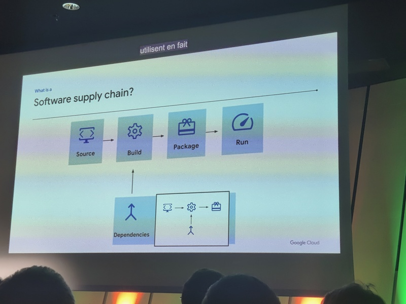 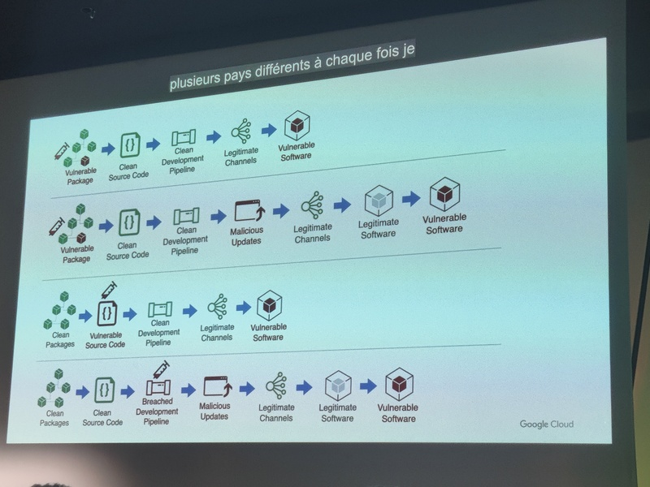
Les vecteurs d’attaques sont partout sur la chaine
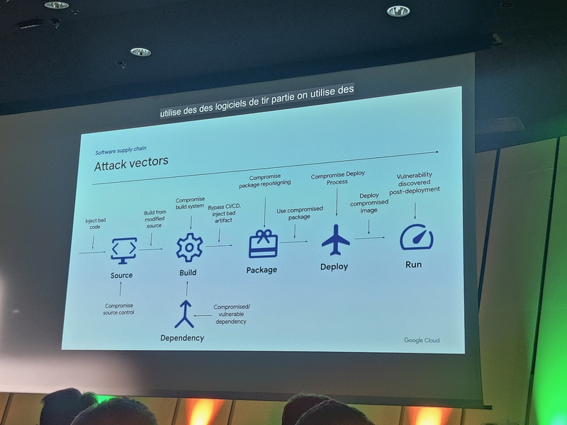
Exemples d’attaque
- SolarWinds. Une backdoor à affecter un de leur client, Continental Pipeline, offline pendant 2 semaines.
- Personne promu committer homebrew sur GitHub
- circle-ci leake de leur clé AWS. Les clients ont du changer leurs clés.
- En suède, une chaine de supermarché a du fermer ses magasins entre 24h et 6j. Un sous-traitant utilise Kaseya qui contient une vuln dans un package node. La backdoor est resté 2 mois avec l’upload sur un serveur de la liste d’achat + nom/prénom.
Solutions: zero-trust shift left
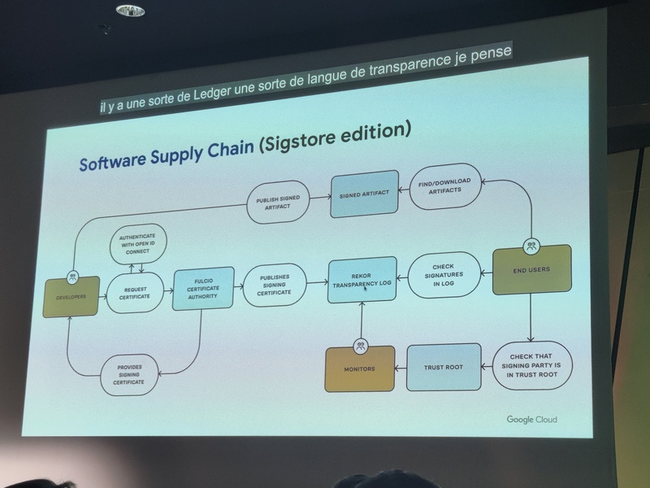
slsa.dev (prononcer salsa) = framework, check list
ex: utiliser git sign pour signer les commits
SBOM : software bill of materials = liste de toutes les deps
loi europeene en 2025
docker génère SBOM
outil cosign marche avec tous les outils OCI
11:35 12:20 - High-Speed DDD (revisited)
Thomas PIERRAIN : VP of Engineering au sein d’une scale-up européenne en plein essor (Agicap)
Faire du DDD même quand tout va très vite.
DDD = Une approche (préoccupation métier au coeur) et une boite à outil.
Tenir compte du langage et le contextualiser.
Dette fonctionnelle = recycler une feature. => code compliqué. crystal meth pour product manager.
Le concept de dette n’est pas intéressant pour mobiliser les gens (car personne ne paye ses dettes).
Présentation de 3 cas métier et solutions associées
Les remboursements de TVA
Pb1: période du plan de treso != période TVA
Pb2: 3 façons existants de gérer la TVA => ajout d’une 4ème.
PM ne veut pas introduire un nouveau concept visible par les clients
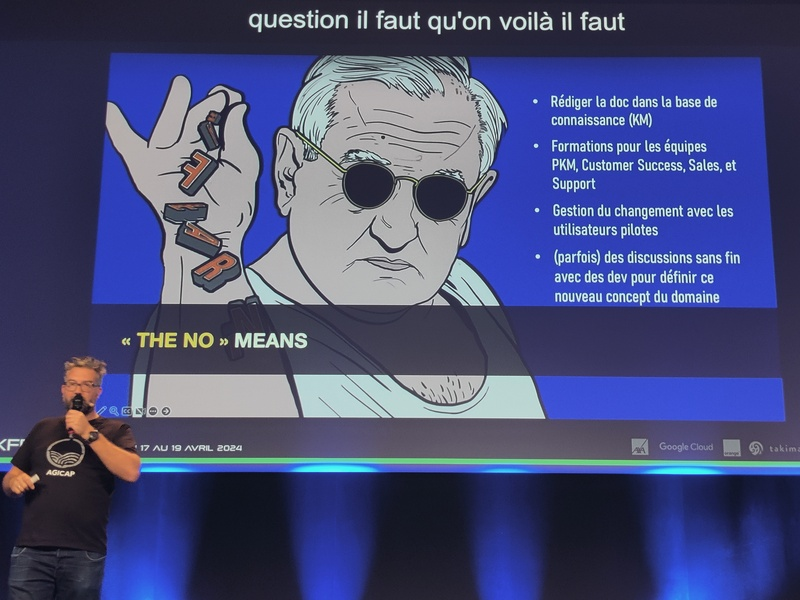
=> Séparer le calcul de la TVA dans un autre bounded context
Utilisation d’une ACL (anti corruption layer) = pattern adapter
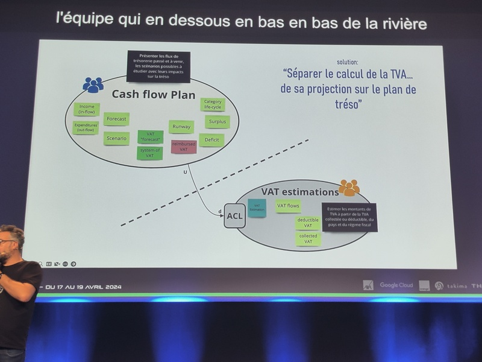
Martin Fowler: YAGNI n’est pas une excuse pour faire des trucs crado.
YAGNI n’est valable que si le code est souple et facile à modifier.
Intégration du plan d’endettement
Proposition initiale à base de Rabbit MQ.
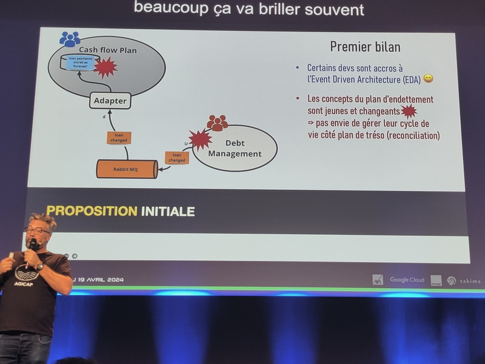
Nouvelle solution
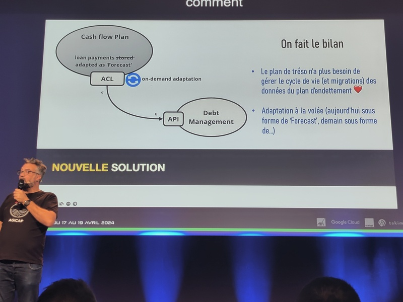
ombilical ACL: ne pas gérer le cycle de vie de l’autre.
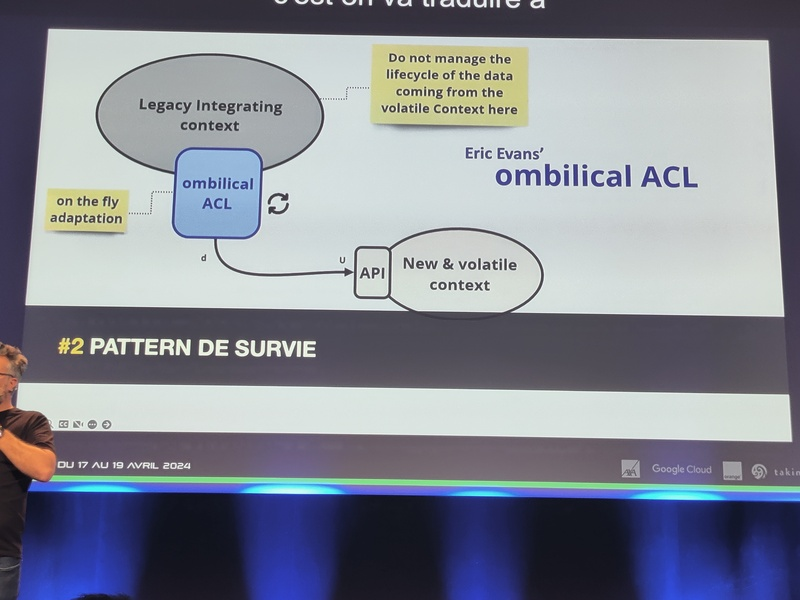
Attention aux effets de mode: microservice, event driven architecture, CQRS.
Big ball of mud
700 tests d’acceptation.
Un changement casse plusieurs trucs …
team topologies définit la charge mentale max d’une équipe.
pattern The Hive
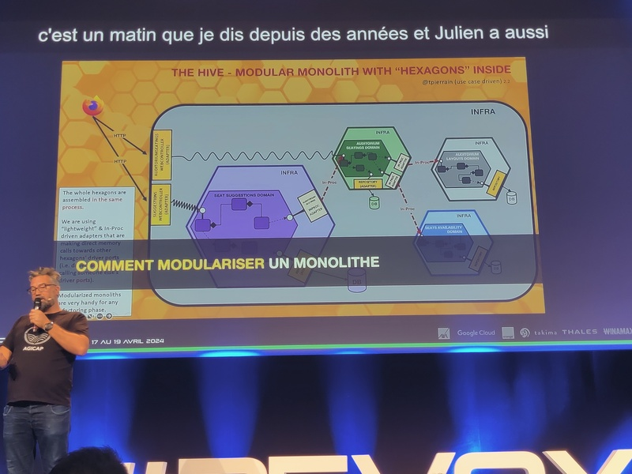 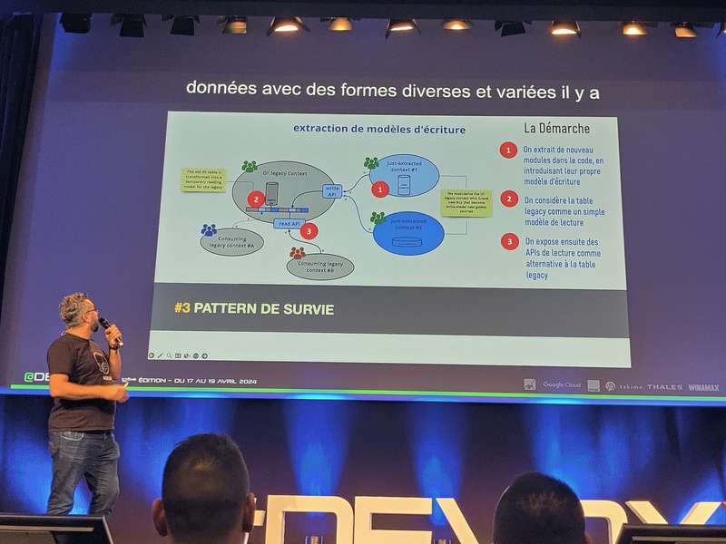
Dual Track
Il développe l’idée du dual track. Une track discovery (pour explorer de nouvelles idées) et une track delivery
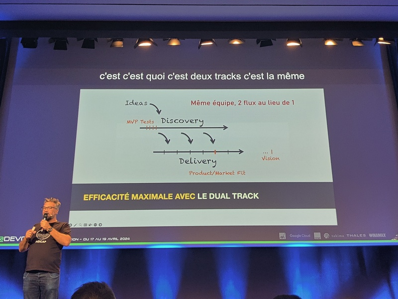
Métaphore du réseau routier pour sensibiliser les non tech à la dette.
13:00 13:15 - Je me suis fait voler la carte de crédit de ma banque en ligne et mon téléphone portable… C’est grave docteur ?
Patrick MERLIN : plus de 25 ans dans la cybersécurité
L’histoire: Une agression à l’arme blanche à un distributeur pour récupérer la CB ainsi que le telephone et l’accès à l’appli de banque en ligne.
Pour se protéger:
- imprimer ses codes de récupération MFA
- reset à distance des équipements volés
- revue périodique des accès
- sensibiliser son entourage au vishing
13:30 14:15 - Du Clic à la Conversation : remplaçons boutons et formulaires par un LLM !
Marie-Alice Blete, Worldline : auteure de “Developing Apps with GPT-4 and ChatGPT” publié chez O’Reilly.
LLM serait la 2ème révolution (après la souris) dans interaction homme/machine.
Un LLM est la génération du prochain mot probable. Un LLM n’est pas déterministe.
2 types : via une API (ex: OpenAI) ou à déployer soi même (ex: Mistral)
Démo d’une application de gestion des plaques d’immatriculation (ajout/modification/suppression)
3 approches
- un gros prompt
- découpage avec utilisation d’une machine à états, avec un prompt spécifique pour chaque état (plus facile à valider)
- utilisation d’agents avec langchain
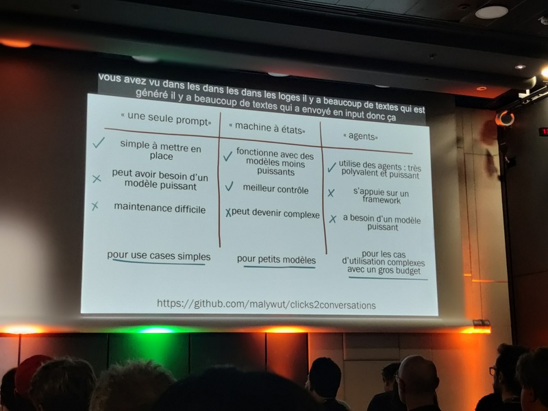
Le code source : malywut/clicks2conversations
Problèmes pour le passage du POC à la prod
- évaluation du prompt => promptfoo
- prouver que ça fonctionne => prouver que ça fonctionne la plupart du temps. Chain of verification
- Prompt injection pour réveler les composants internes ou changer le comportement
- cout
- privacy: données personnelles à OpenAI aux US
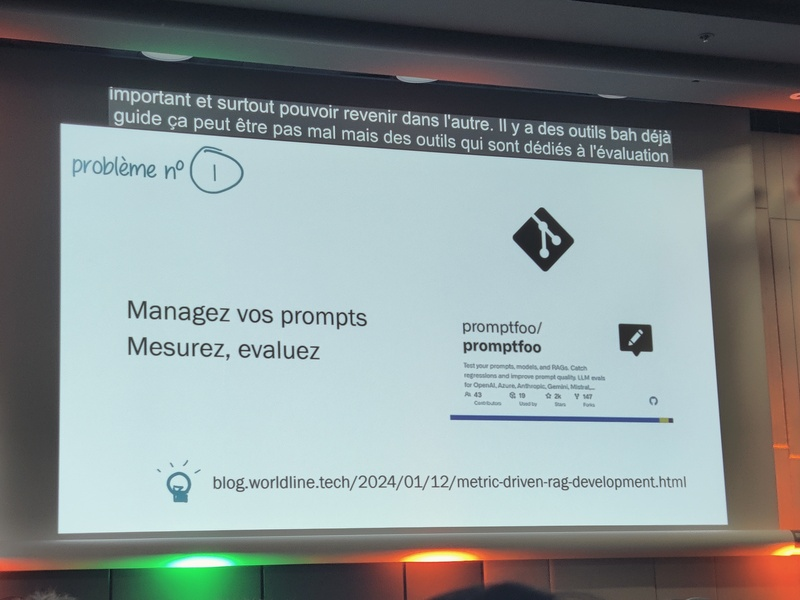 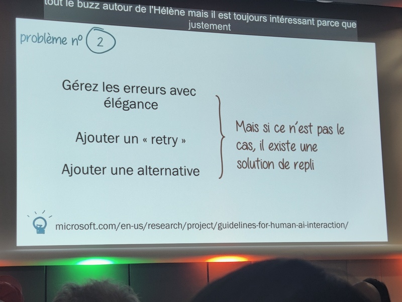
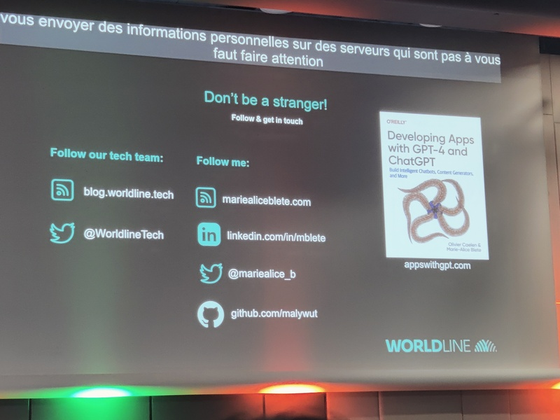
14:35 15:20 - Nous sommes tous rassemblés - We are all to gather
Remi Forax : Maitre de Conférence à l’Université Gustave Eiffel (à Marne la Vallée).
API Gatherer en preview dans JDK 22.
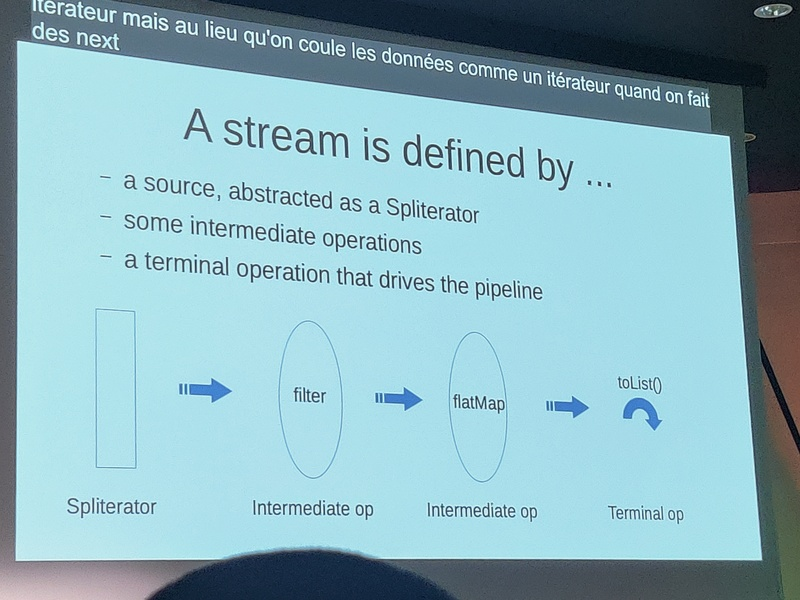
Iterator = mode pull. Spliterator = mode push (sait se couper en deux)
Gatherer permet de définir des opérations intermédiaires.
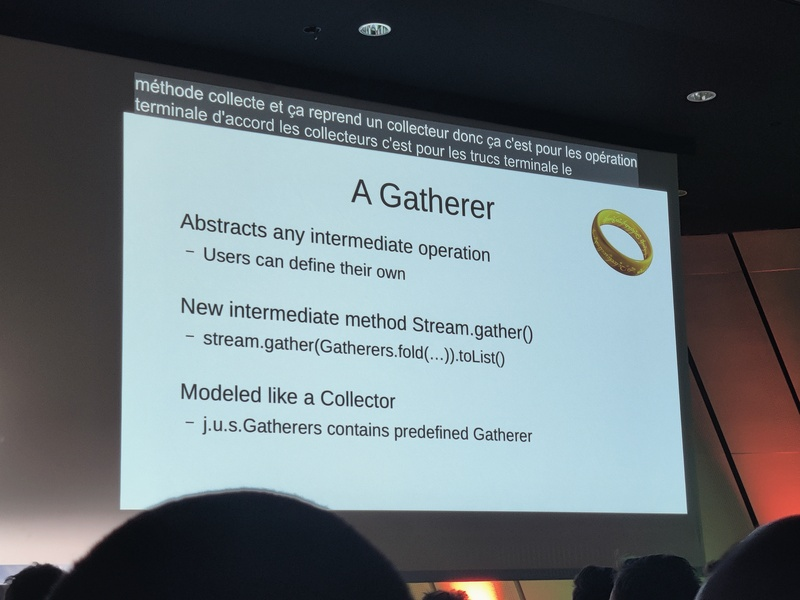
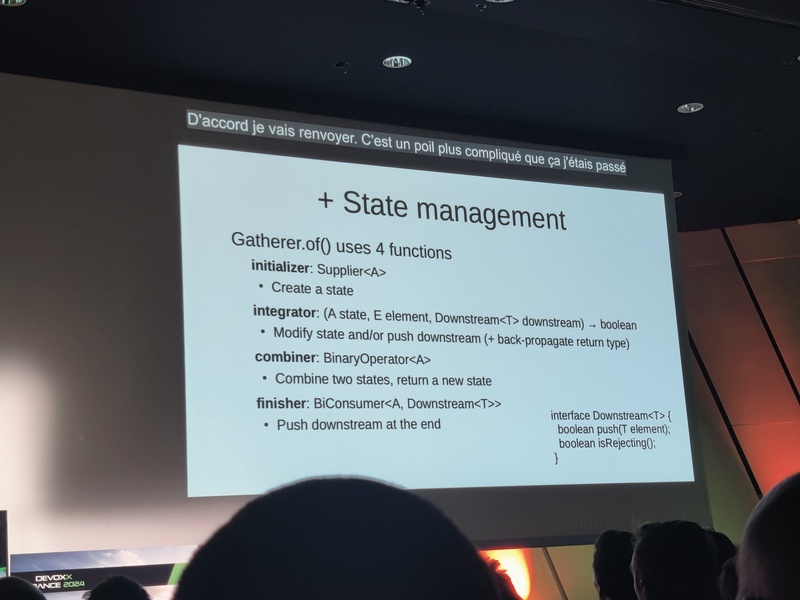
Live coding de gatherer
filter
Integrator.ofGreedy = not short circuit = ne renvoie pas false tout seul.
takeWhile
Gatherer.of. return false
limit
Gatherer.ofSequential force le stream à ne pas être // car implem. ne fonctionne pas en multi-thread.
En résumé
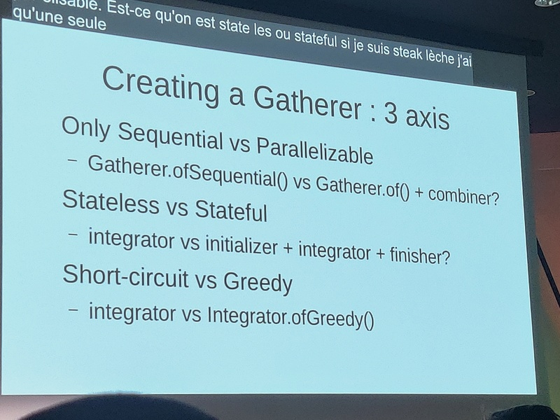
Tests de performance
Utiliser JMH ! Problèmes même avec JMH, ex: dispatche lent à partir de 3 implémentations.
Perf map+sum lent car no primitive specialization.
stream par défaut sait que map préserve la taille
spliterator characteristics ne sont pas (encore) propagés
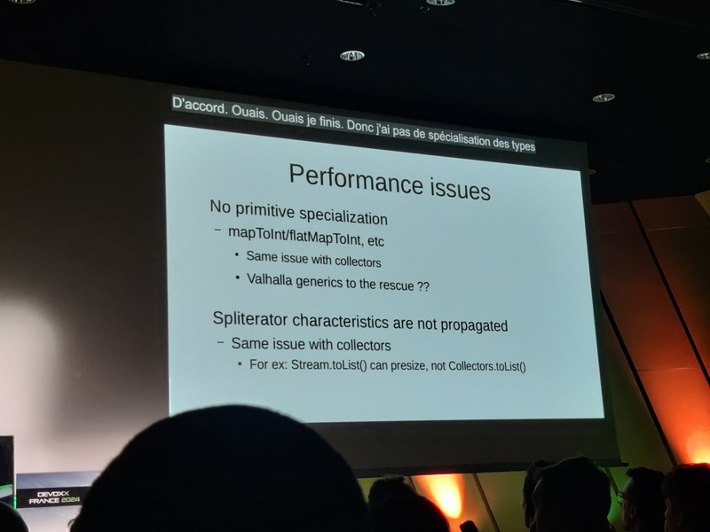
15:40 16:25 - Une application résiliente, dans un monde partiellement dégradé
Pascal MARTIN : Principal Engineer chez Bedrock à Lyon, sur la plateforme qui propulse 6play.
Rappel sur la mesure de la disponibilité : X-nines
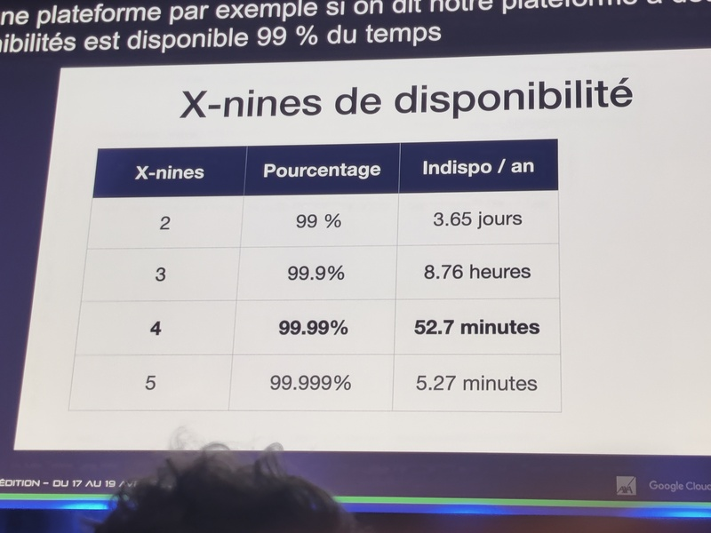
Mais le plus important est la satisfaction des utilisateurs. Ex. du site des impots inaccessible avant la cloture.
Si deux appels d’API dispo à 99.99, le résultat est dispo à 99.99 * 99.99, et pas 99.99 !
Si on dépend d’un service disponible à 3-9, on ne peut pas faire mieux (ex: Amazon RDS est dispo à 99.95%)
Les systèmes distribués. Blast radius = rayon d’explosion
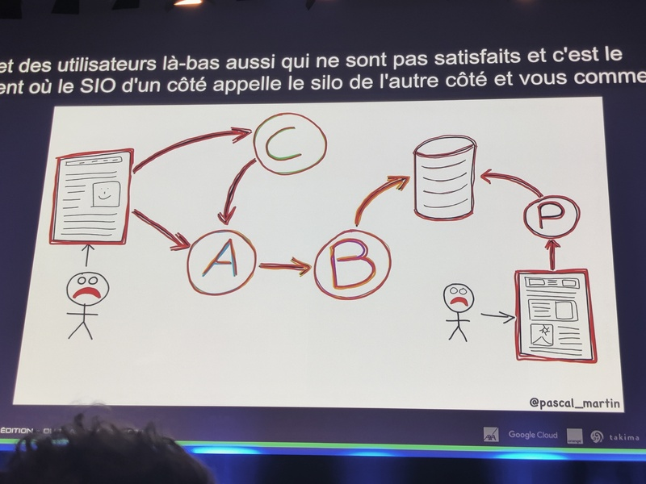
Observabilité = Logs + Métriques + Tracing distribué
SLI = Service Level Indication 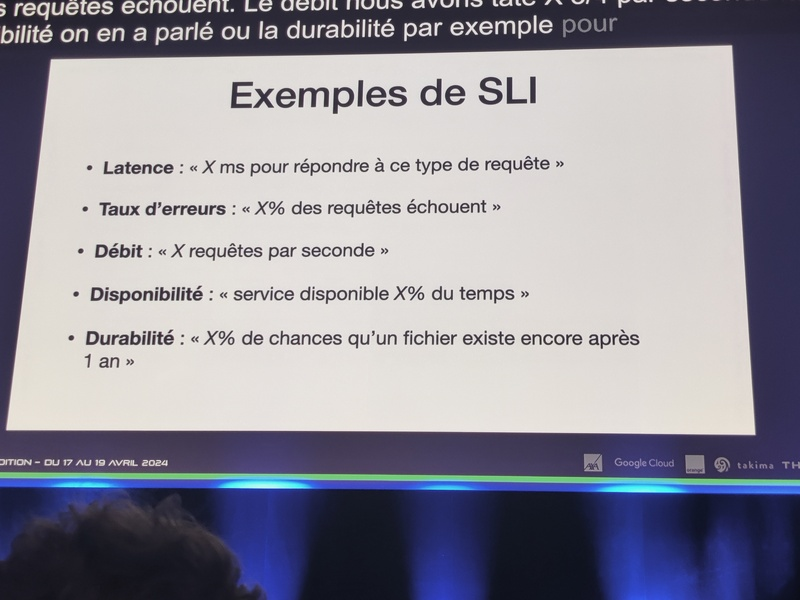
SLO = Service Level Objective 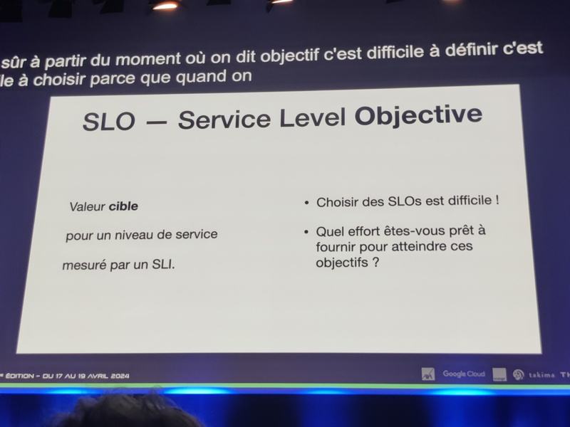 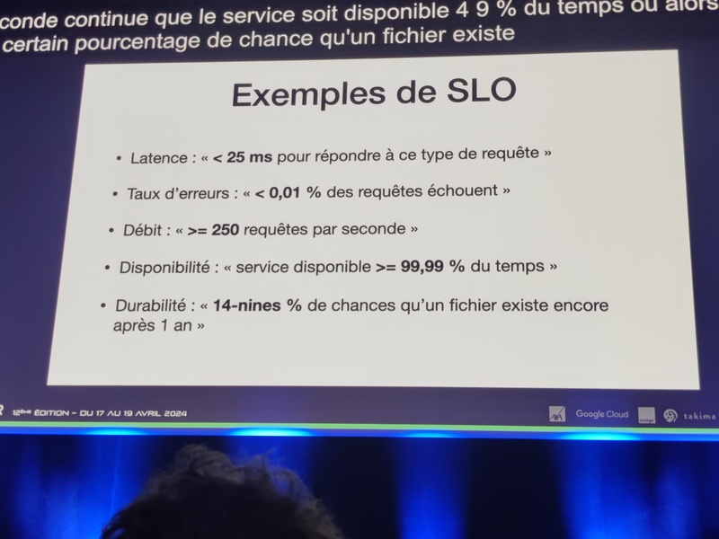
- SLA = Service Level Agreement
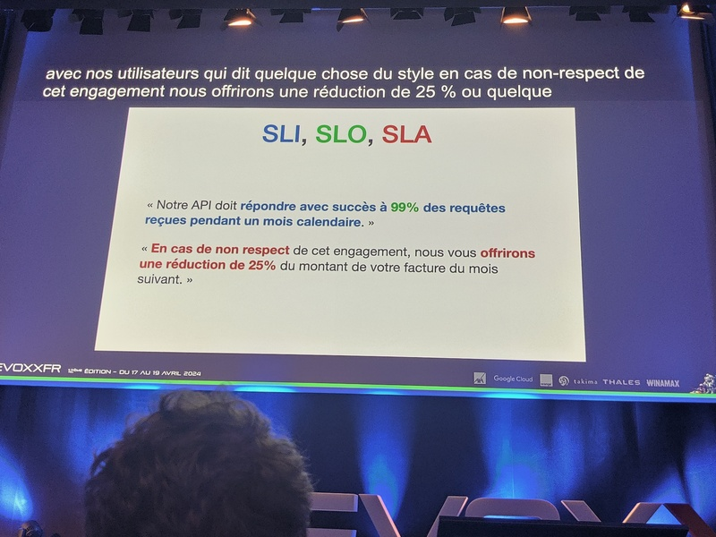
Déclencher une alerte uniquement quand il faut intervenir. Une alerte doit etre actionnable.
Un service qui prend 10ms avec un timeout à 1s est suspect (100 fois plus lent que la normal)
Catalogue de solutions pour améliorer la résilience
- Read replica
- Multi region
- Random jitter = étaler dans le temps expiration du cache (pour limiter charge sur la DB)
- Retry avec un nombre d’essais limités
- Exponential Backoff
- Mode dégradé
- Circuit breaker
- Chaos engineering = provoquer la fin du monde. Origine = Netflix avec Chaos Monkey pour tuer des VMS en prod.
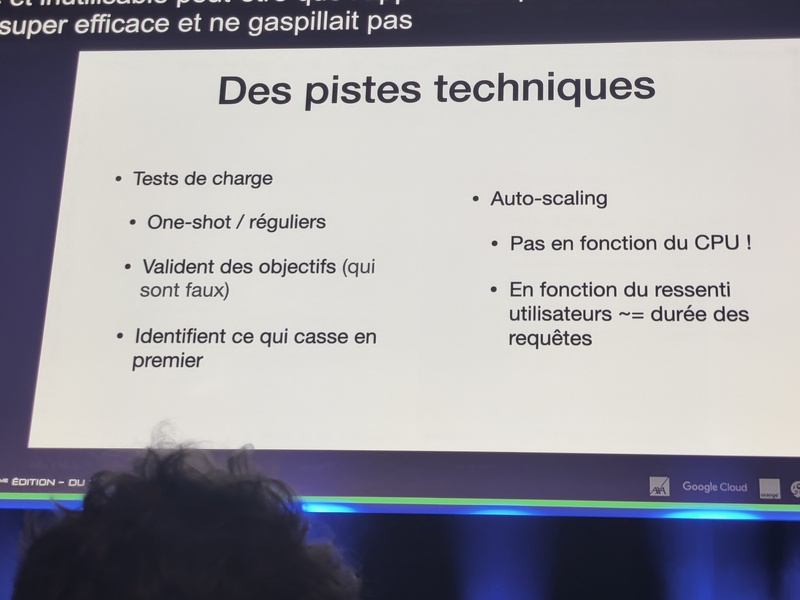
Approche DevOps : l’objectif est de fournir un service (pas coder une API ou déployer une application)
Et le dernier conseil : Choose boring technology
17:00 17:30 - Picocli : mets du Java dans ton terminal !
Stéphane Philippart, OVHcloud : Développeur Java depuis de nombreuses d’années.
picocli permet de faire un outil CLI sur la JVM : Java, Kotlin, Scala.
Commandes utilisées:
quarkus create clibootstrape le projetquarkus devrecharge à chaud les classesquarkus buildconstruit le jarquarkus build -nativeconstruit un binaire natif